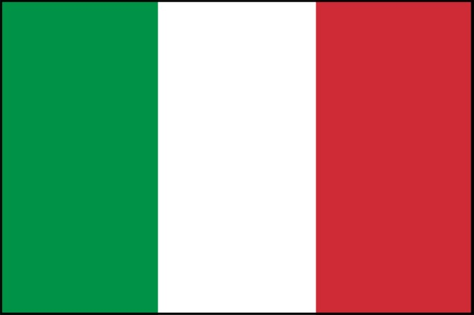
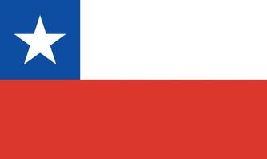
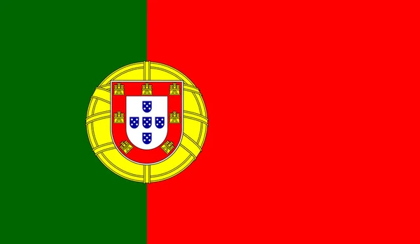
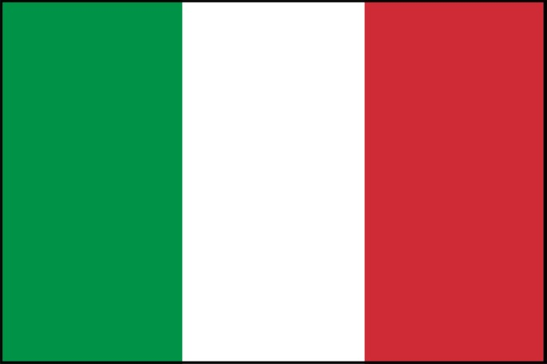
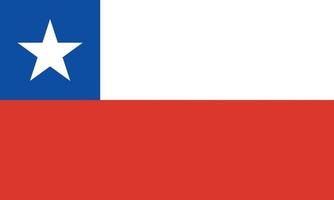
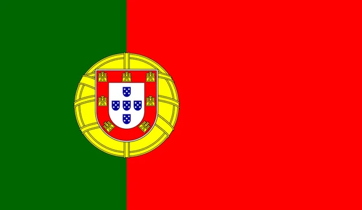

R$ 95,90
$ 92,06 à vista com desconto ou 4x de R$ 23,98 Sem juros
O Vinho Pizzato Allumé é um vinho branco feito com uvas Chardonnay de diferentes regiões do Rio Grande do Sul seguindo a mesma proposta de escolha e vinificação dos vinhos da linha Pizzato e Fausto.
Um vinho branco com mais corpo e com edição limitada em que uma das melhores vinícolas do Vale dos Vinhedos fez para colocar em sua adega.

R$ 139,90
R$ 134,30 à vista com desconto ou 4x de R$ 34,98 Sem juros
O Pizzato Egiodola Reserva é um vinho estruturado, com expressão tânica pronunciada. Um dos 3 únicos Brasileiros varietais desta uva por isso o torna muito exclusivo. Passagem por barris de carvalho francês (1º e 2º usos). Vinhedos próprios, conduzidos em espaldeiras-lira desde 1988. Lote limitadíssimo e exclusivo.

R$ 149,90
R$ 143,90 à vista com desconto ou 4x de R$ 37,48 Sem juros
O Carmine Granata Cabernet Sauvignon é um grande vinho que preserva sua essência dos melhores Cabernets da Argentina. Produzido com vinhas antigas com mais de 80 anos de idade, esse vinho ganhou grande complexidade de aromas e sabores com grande elegância. Um vinho que vale a pena conferir!

De R$ 59,90 R$ 45,90
R$ 44,06 à vista com desconto ou 4x de R$ 11,48 Sem juros
Notas de especiarias, com deliciadas notas de pimentas e frutas negras, como amora, cassis e framboesa. Acompanha bem carnes vermelhas, massas e peixes que tenham mais gordura. Uva Merlot, vinho tinto, seco.

R$ 189,00
R$ 181,44 à vista com desconto ou 4x de R$ 47,25 Sem juros
O vinho Bonpas Dom Hugres é produzido com colheita manual seguindo os rigorosos controles da Vinícola Bonpas. Sua maceração ocorre durante 15 dias e a fermentação em tanques de carvalho durante 10 meses. Assim a Vinícola Bonpas preserva a tradução de mais de 700 anos.
O Vinho Bonpas Dom Hugres é feito com as uvas Grenache, Syrah e Mourvèdre que são muito produzidas e utilizadas na fabricação de inúmeros vinhos no Vale do Rhône.

R$ 309,90
R$ 297,50 à vista com desconto ou 4x de R$ 77,48 Sem juros
O Baudonim Millet AOC é sem dúvida um dos melhores representantes de Chablis com um ótimo custo-benefício. Muito fresco, frutado e com uma acidez incrível, esse representante de Chablis entrega muito bem o que se espera dos melhores Chardonnays da Borgonha. Ideal para acompanhar carnes brancas e massas mais leves, a sua harmonização ficará perfeita. Ótima escolha!

R$ 389,50
R$ 373,92 à vista com desconto ou 4x de R$ 97,38 Sem juros
Com uma cor vermelha granada intenso, o Il Falcone reserva DOCG possui aromas complexos com notas de frutas maduras, couro, tabaco e especiarias muito finas. Em boca, o vinho é austero, encorpado e possui uma grande estrutura. Com taninos extremamente aveludados e um equilíbrio perfeito, é um vinho seco que possui uma persistência muito longa. A melhor temperatura para servir o Il Falcone reserva DOCG é entre 16º a 18º. Este vinho harmoniza muito bem com carnes, massas e pratos mais condimentados, além de se dar bem com risotos e pratos mais encorpados. Se você é um amante de vinhos encorpados e com notas complexas, o Il Falcone Reserva DOCG é uma excelente opção.

R$ 129,90
R$ 124,70 à vista com desconto ou 4x de R$ 32,48 Sem juros
Ao degustá-lo, o paladar é brindado com um equilíbrio perfeito entre taninos maduros e acidez refrescante. É um vinho que acompanha perfeitamente pratos de carne vermelha e massas com molhos robustos, mas também pode ser apreciado sozinho, deixando um sabor inesquecível na boca.O Vinho Chianti Terra Del Giglio é a escolha perfeita para compartilhar com amigos e familiares em ocasiões especiais, é uma celebração da vida e da paixão pela qualidade e tradição. É uma verdadeira joia da Toscana e um tributo aos antigos mestres vinhateiros da região.

R$ 49,90
R$ 47,90 à vista com desconto ou 4x de R$ 12,48 Sem juros
O Ethikos Cabernet Sauvignon É um vinho de corpo médio a completo, com taninos maduros e acidez equilibrada, o que lhe confere uma longa guarda e evolução no tempo. É um vinho perfeito para acompanhar carnes vermelhas, caça, queijos maduros e pratos condimentados. É uma excelente opção para aqueles que procuram experimentar a qualidade e a tradição dos vinhos chilenos, especialmente os produzidos com a variedade Cabernet Sauvignon.

R$ 49,90
R$ 47,90 à vista com desconto ou 4x de R$ 12,48 Sem juros
Notas bem presentes de frutas vermelhas como framboesa e morango. Carnes leves como aves grelhadas e pratos leves de massas ou saladas. Comida japonesa e camarão harmonizam muito bem com ele. Uva Cabernet Sauvignon e Syrah, vinho Rose Demi-Seco

R$ 149,90
R$ 143,90 à vista com desconto ou 4x de R$ 37,48 Sem juros
O Vinho Recantos de Lisboa Reserva passou por estágio em barricas de carvalho francês por 9 meses para amaciar seus taninos e ganhar mais complexidade de aromas e de sabores. Quando colocado em taça sua coloração é rubi intensa com reflexos castanhos. Seus aromas ficaram bem definidos e elegantes de frutas vermelhas silvestres e nuances de especiarias finas com baunilha. Em boca é elegante, fresco e com final de boca frutado em bem untuoso. Um vinho português sensacional e com impressionante qualidade.

$ 49,90
R$ 47,90 à vista com desconto ou 4x de R$ 12,48 Sem juros
Vinho Dom Jordão Rosé é um Vinho Português de excelente qualidade. Ele é feito com as uvas Castelão e Tinta Roriz e seu amadurecimento é feito em tanques de inox. É um VinhoPortuguês leve e muito refrescante com o seu teor alcoólico em 9,5%. A sua harmonização fica incrível com pratos mais leves como as nossas saladas com folhas, peixes e frutos do mar. Fica incrível quando harmonizado com sushi e comidas japonesas.